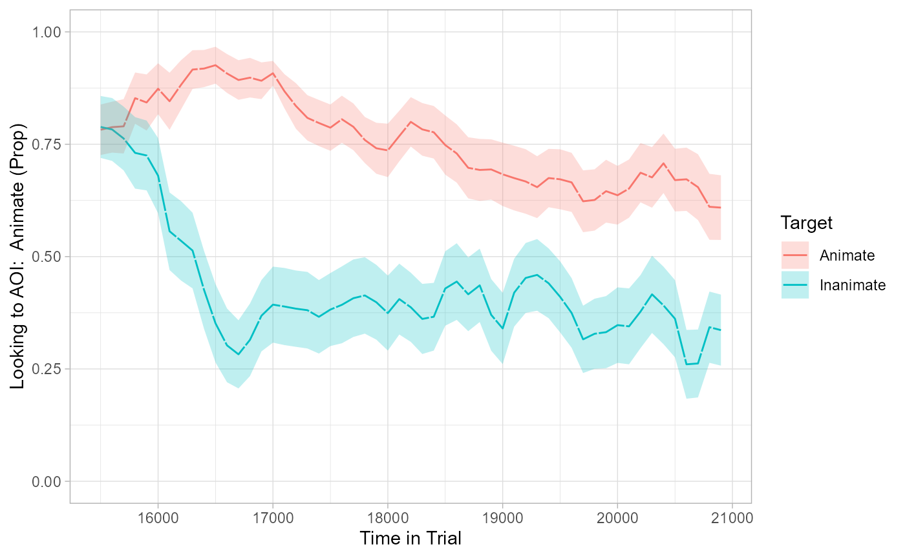
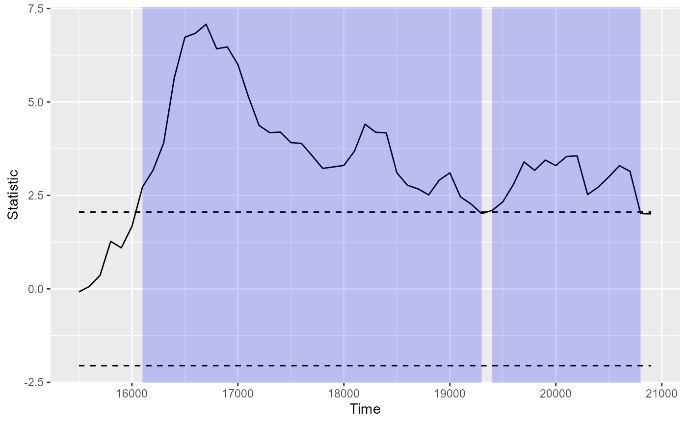
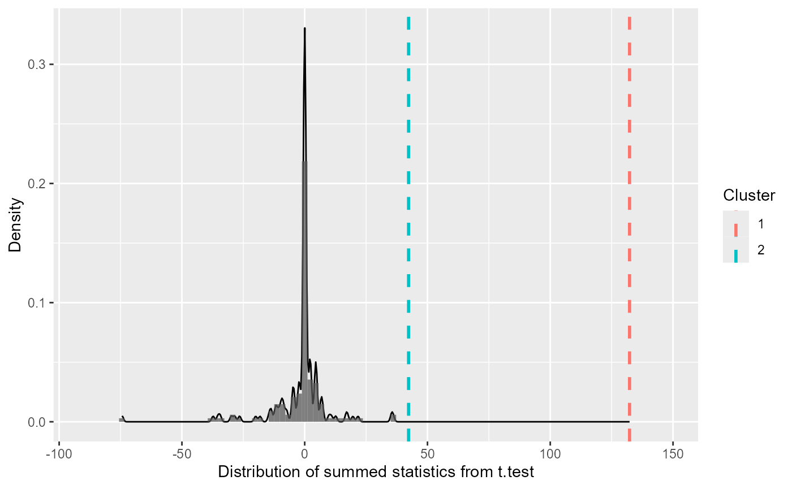
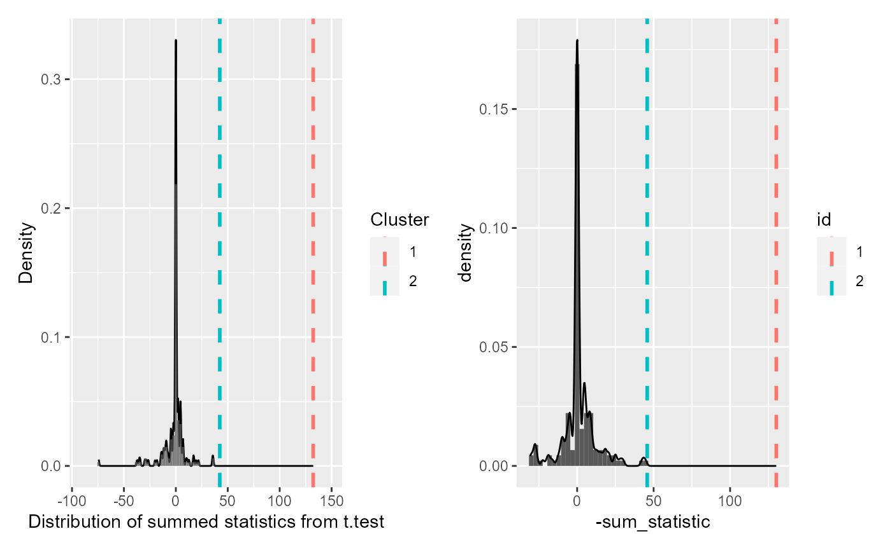

Comparison to eyetrackingR
Source:vignettes/articles/eyetrackingR-comparison.Rmd
eyetrackingR-comparison.RmdThis article replicates the cluster-based permutation analysis in the eyetrackingR vignette “Divergence”.
See more tutorials and vignettes on the Articles page.
Setup
The following collapsed code chunk runs the code in the “Prerequisites” section of the original eyetrackingR vignette:
“Prerequisites” setup code
set.seed(42)
library("Matrix")
library("lme4")
library("ggplot2")
library("eyetrackingR")
data("word_recognition")
data <- make_eyetrackingr_data(word_recognition,
participant_column = "ParticipantName",
trial_column = "Trial",
time_column = "TimeFromTrialOnset",
trackloss_column = "TrackLoss",
aoi_columns = c("Animate", "Inanimate"),
treat_non_aoi_looks_as_missing = TRUE
)
# subset to response window post word-onset
response_window <- subset_by_window(data,
window_start_time = 15500,
window_end_time = 21000,
rezero = FALSE
)
# analyze amount of trackloss by subjects and trials
(trackloss <- trackloss_analysis(data = response_window))
#> # A tibble: 155 × 6
#> ParticipantName Trial Samples TracklossSamples TracklossForTrial
#> <fct> <fct> <dbl> <dbl> <dbl>
#> 1 ANCAT139 FamiliarBottle 330 161 0.488
#> 2 ANCAT18 FamiliarBird 330 74 0.224
#> 3 ANCAT18 FamiliarBottle 330 43 0.130
#> 4 ANCAT18 FamiliarCow 330 159 0.482
#> 5 ANCAT18 FamiliarDog 330 95 0.288
#> 6 ANCAT18 FamiliarHorse 330 165 0.5
#> 7 ANCAT18 FamiliarSpoon 330 95 0.288
#> 8 ANCAT22 FamiliarBird 330 14 0.0424
#> 9 ANCAT22 FamiliarBottle 330 8 0.0242
#> 10 ANCAT22 FamiliarDog 330 55 0.167
#> # ℹ 145 more rows
#> # ℹ 1 more variable: TracklossForParticipant <dbl>
# remove trials with > 25% of trackloss
response_window_clean <- clean_by_trackloss(
data = response_window,
trial_prop_thresh = .25
)
# create Target condition column
response_window_clean$Target <- as.factor(ifelse(test = grepl("(Spoon|Bottle)", response_window_clean$Trial),
yes = "Inanimate",
no = "Animate"
))
response_time <- make_time_sequence_data(response_window_clean,
time_bin_size = 100,
predictor_columns = c("Target"),
aois = "Animate",
summarize_by = "ParticipantName"
)We pick up from where the response_time dataframe is
created. By this stage, the data has been filtered for track loss and
aggregated by subject and by time bins, among other things.
A fuller description of the experiment and the research hypothesis can be found in the original eyetrackingR vignette. For the purposes of this exercise, we note the following minimal facts about the analysis:
- The hypothesis is
Prop ~ Target. A t-test is used to estimate the effect ofTargetonProp -
Targetis the experiment condition. It is a two-level factor ("Animate"vs."Inanimate") -
Propis the response variable. It is a continuous measure of the proportion (0-1) of looks to the area of interest -
ParticipantNameis the column that identifies each participant -
TimeBinrepresents the time, binned in 100ms windows
Additionally, we keep the following columns as they are necessary metadata for the eyetrackingR approach, though they can be dropped for the jlmerclusterperm approach.
-
Timeis the continuous, raw (i.e., un-binned) measure of time -
AOIis the identity of the area of interest
For simplicity, we subset response_time to include only
the columns of interest for the cluster-based permutation analysis.
response_time <- response_time %>%
select(
Prop, Target, TimeBin, ParticipantName,
Time, AOI
)
dplyr::glimpse(response_time)
#> Rows: 2,970
#> Columns: 6
#> $ Prop <dbl> NaN, NaN, NaN, NaN, NaN, NaN, 0, 0, 1, 1, 1, 1, 1, 1, …
#> $ Target <fct> Animate, Animate, Animate, Animate, Animate, Animate, …
#> $ TimeBin <dbl> 155, 156, 157, 158, 159, 160, 161, 162, 163, 164, 165,…
#> $ ParticipantName <fct> ANCAT18, ANCAT18, ANCAT18, ANCAT18, ANCAT18, ANCAT18, …
#> $ Time <dbl> 15500, 15600, 15700, 15800, 15900, 16000, 16100, 16200…
#> $ AOI <chr> "Animate", "Animate", "Animate", "Animate", "Animate",…Lastly, we replicate the plot from the original vignette:
# visualize timecourse
plot(response_time, predictor_column = "Target") +
theme_light() +
coord_cartesian(ylim = c(0, 1))
#> Warning: Removed 37 rows containing non-finite values (`stat_summary()`).
#> Removed 37 rows containing non-finite values (`stat_summary()`).
CPA in {eyetrackingR}
Continuing with the response_time dataframe, we jump to
the “Bootstrapped
cluster-based permutation analysis” of the original vignette.
Choosing the threshold
The original vignette uses the following heuristic of choosing a threshold:
num_sub <- length(unique((response_window_clean$ParticipantName)))
threshold_t <- qt(p = 1 - .05 / 2, df = num_sub - 1)
threshold_t
#> [1] 2.055529How to choose a threshold is outside the scope of this article - we will simply use this value for both approaches.
In eyetrackingR, CPA is conducted in two steps:
-
Prepare data for CPA with
make_time_cluster_data():df_timeclust <- make_time_cluster_data(response_time, test = "t.test", paired = TRUE, predictor_column = "Target", threshold = threshold_t )This step computes the timewise statistics from the data and identifies the empirical clusters, which can be inspected with a
plot()andsummary()method:plot(df_timeclust)
summary(df_timeclust) #> Test Type: t.test #> Predictor: Target #> Formula: Pair(Prop[Target == "Animate"], Prop[Target == "Inanimate"]) ~ 1 #> Summary of Clusters ====== #> Cluster Direction SumStatistic StartTime EndTime #> 1 1 Positive 132.29900 16100 19300 #> 2 2 Positive 42.31067 19400 20800 -
Run the permutation test on the cluster data with
analyze_time_clusters():system.time({ clust_analysis <- analyze_time_clusters( df_timeclust, within_subj = TRUE, paired = TRUE, samples = 150, quiet = TRUE ) }) #> user system elapsed #> 13.22 0.10 39.03This simulates a null distribution of cluster-mass statistics. The output, when printed, is essentially the output of
summary(df_timeclust)with p-values (theProbabilitycolumn)clust_analysis #> Test Type: t.test #> Predictor: Target #> Formula: Pair(Prop[Target == "Animate"], Prop[Target == "Inanimate"]) ~ 1 #> Null Distribution ====== #> Mean: -1.4815 #> 2.5%: -31.1268 #> 97.5%: 17.9841 #> Summary of Clusters ====== #> Cluster Direction SumStatistic StartTime EndTime Probability #> 1 1 Positive 132.29900 16100 19300 0.000000000 #> 2 2 Positive 42.31067 19400 20800 0.006666667The null distribution (and the extremety of the empirical clusters in that context) can be visualized with a
plot()method:plot(clust_analysis)
CPA in {jlmerclusterperm}
First, we set up jlmerclusterperm. For comparability, we use a single thread:
library(jlmerclusterperm)
options("jlmerclusterperm.nthreads" = 1)
system.time({
# Note the overhead for initializing the Julia session
jlmerclusterperm_setup()
})
#> user system elapsed
#> 0.04 0.01 32.76In {jlmerclusterpm}, CPA can also be conducted in two
steps:
-
Make the specification object with
make_jlmer_spec()We first specify the formula, data, and grouping columns of the data. Instead of a paired t-test, we specify a linear model with the formula
Prop ~ Target.spec <- make_jlmer_spec( formula = Prop ~ Target, data = response_time, subject = "ParticipantName", trial = "Target", time = "TimeBin" ) #> ! Dropping 37 rows with missing values.The output prepares the data for CPA by subsetting it and applying the contrast coding schemes, among other things:
spec #> ── jlmer specification ───────────────────────────────────────── <jlmer_spec> ── #> Formula: Prop ~ 1 + TargetInanimate #> Predictors: #> Target: TargetInanimate #> Groupings: #> Subject: ParticipantName #> Trial: Target #> Time: TimeBin #> Data: #> # A tibble: 2,933 × 5 #> Prop TargetInanimate ParticipantName Target TimeBin #> <dbl> <dbl> <fct> <fct> <dbl> #> 1 0 0 ANCAT18 Animate 161 #> 2 0 0 ANCAT18 Animate 162 #> 3 1 0 ANCAT18 Animate 163 #> # ℹ 2,930 more rows #> ──────────────────────────────────────────────────────────────────────────────── -
Run the permutation test with the specification using
clusterpermute()system.time({ cpa <- clusterpermute(spec, threshold = threshold_t, nsim = 150) }) #> user system elapsed #> 0.03 0.00 16.05The same kinds of information are returned:
cpa #> $null_cluster_dists #> ── Null cluster-mass distribution (t > 2.05552943864287) ─────────────────────── #> TargetInanimate (n = 150) #> Mean (SD): -1.009 (11.03) #> Coverage intervals: 95% [-25.856, 27.183] #> ──────────────────────────────────────────────────────────────────────────────── #> #> $empirical_clusters #> ── Empirical clusters (t > 2.05552943864287) ─────────── <empirical_clusters> ── #> TargetInanimate #> [161, 191]: -130.192 (p=0.0066) #> [194, 209]: -45.791 (p=0.0066) #> ────────────────────────────────────────────────────────────────────────────────The different pieces of information are available for further inspection using
tidy(), which returns the dataframe underlying the summary:null_distribution <- tidy(cpa$null_cluster_dists) null_distribution #> # A tibble: 150 × 6 #> predictor start end length sum_statistic sim #> <chr> <dbl> <dbl> <dbl> <dbl> <fct> #> 1 TargetInanimate NA NA NA 0 001 #> 2 TargetInanimate 208 209 2 5.09 002 #> 3 TargetInanimate 197 200 4 -8.94 003 #> 4 TargetInanimate 205 206 2 -4.32 004 #> 5 TargetInanimate NA NA NA 0 005 #> 6 TargetInanimate 193 196 4 -10.8 006 #> 7 TargetInanimate 187 193 7 19.3 007 #> 8 TargetInanimate 177 180 4 9.34 008 #> 9 TargetInanimate 159 161 3 -7.57 009 #> 10 TargetInanimate NA NA NA 0 010 #> # ℹ 140 more rowsempirical_clusters <- tidy(cpa$empirical_clusters) empirical_clusters #> # A tibble: 2 × 7 #> predictor id start end length sum_statistic pvalue #> <chr> <fct> <dbl> <dbl> <dbl> <dbl> <dbl> #> 1 TargetInanimate 1 161 191 31 -130. 0.00662 #> 2 TargetInanimate 2 194 209 16 -45.8 0.00662
In contrast to eyetrackingR,
jlmerclusterperm does not provide a custom
plot() method. However, the same kinds of plots can be
replicated with a few lines of ggplot code:
# We flip the sign of the statistic here for visual equivalence
cpa_plot <- null_distribution %>%
ggplot(aes(-sum_statistic)) +
geom_histogram(
aes(y = after_stat(density)),
binwidth = 3
) +
geom_density() +
geom_vline(
aes(xintercept = -sum_statistic, color = id),
data = empirical_clusters,
linetype = 2,
linewidth = 1
)
cpa_plot
Note that while the sign of the clusters is (originally) flipped
between the two approaches, this is a trivial difference that simply
reflects the default choice of baseline in t.text()
vs. regression contrasts. This can be addressed by setting contrasts
prior to running the CPA (see related issue in another
article).
Lastly, a side-by-side comparison of the results:

Performance
jlmerclusterperm scales easily to a higher number of simulations, especially for fixed-effects models:
system.time({
clusterpermute(spec, threshold = threshold_t, nsim = 1000)
})
#> user system elapsed
#> 0.06 0.05 11.44While eyetrackingR does have an option for parallelization, it has limited support and is platform dependent. In contrast, jlmerclusterperm leverages Julia’s built-in multi-threading support which is more performant and consistent:
options("jlmerclusterperm.nthreads" = 7)
system.time({
jlmerclusterperm_setup(restart = TRUE, verbose = FALSE)
})
#> user system elapsed
#> 0.14 0.01 23.2010,000 simulations with 7 threads:
system.time({
clusterpermute(spec, threshold = threshold_t, nsim = 10000)
})
#> user system elapsed
#> 0.29 0.99 54.15